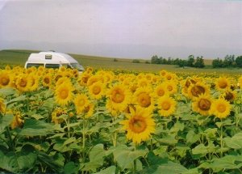
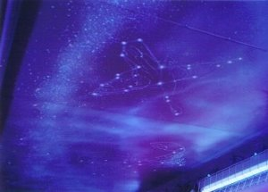
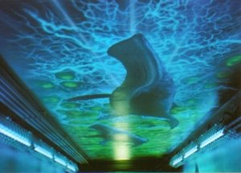

北海道、自転車で走ってみたい | 2006年8月 |
|---|---|
| 8月11日(金）夜から20日（日)早朝にかけて行ってきました。 長いようで短くボリューム満点の遠征でした。走破3800kmくらい？同行者は１人。 11日は会社の最終日であり納涼祭があった。参加して晩飯を食す。社員割引および無料券、地元の演奏者が立つので満足。 そのままキッカー宅へ乗込み、準備を始めた。 今回は「北海道で自転車（チャリ）200KM/DAYの旅＋島」が目的。 前後輪はずしたチャリ２台がラゲージに収まった。 道中は帰省ラッシュとブッキングしたが、NAVIを駆使して渋滞回避した。青森港から函館までフェリー。12日夜は函館の夜景（山の中腹）を車で堪能。頂上は霧深くて駄目だった。 | |
|  |  |
| 13日（日）は道央を堪能した。林道走破、富田ファーム、美瑛のチャリポタリングを実施した。美瑛での夕立は３回間一髪で降り、びちょ濡れになって最悪でした(汗）。 14日（月）はメインイベント。 チャリで名寄から稚内まで走破予定が、私は70ｋｍ途中でダウン。 沖縄パワー（黒糖・シークワーサー果汁、チョコ）でドーピングをし、変身した私は豊富までの140ｋｍほどを走ることができました（変身は上着およびズボンを脱いだ状態を指す）。 豊富で万全を期してドロップアウトし、温泉および牛乳の飲み放題（100円で♪）にチャレンジした。 牛乳は残念ながら経営してなかった。温泉は電車駅から片道６ｋｍの位置にあり、軽油臭い、脂の浮いた温泉に入った♪ 帰りは輪行を電車でした。 15日(火）は最北の島！ 礼文島でした。 チャリでフェリー初トライ♪ 宿に入り、裏道の峠をチャリで上がり夕日をみた。 16日（水）は島チャリツーリング。 北端のスコトン岬や澄海岬を巡る。 初めは雨であったが、後半は晴天になった。 澄海岬は海が青くて綺麗だった。 周辺はどこまでも続く平原だぁ！ 17日（木）は雨天。 サロマ湖まで海岸線を走り、帯広まで下がる道東かじり。 さるべつの地下道の壁絵は綺麗でした。 18日（金）も雨天。 山奥の温泉から日高、苫小牧、室蘭、函館へと進む道南かじり。 山奥の温泉は川の流れが激しいのと雨降りだったので止めました(どちらかであれば挑戦でしたが）。 室蘭の地球岬は霧。 イルカや鯨が見れるとの話でしたが×。 さて、函館でビール園へ行き試飲するも、私は昨年に出向いたBARへ。タメ年で、話も面白いバーテンがいる。”また来年”と言われてけど、どない？（笑）。ホテルで就寝。 | |
 |  |
| 19日(土）は函館からフェリーで出て、片道１時間の白神山地の暗門の滝までトレッキングをした。そのまま順調に帰宅。 約９時間で青森から静岡を走破した。 | |
|  |  |
| 食事(主なもの）： ほっけ刺身・定食＜12日夜＞、旭川ラーメンしょうゆ＜13日夜＞、天丼＋たこの酢漬け＜14日夜＞、うに丼小＜16日昼＞、蛸しゃぶ＜17日昼＞、回転すし＜17日夜＞、苫小牧 イクラほっき丼＜18日昼＞、函館ビール園ジンギスカン・店長のビール度数10％＜18日夜＞、青森の塩ラーメン＜19日＞ 写真＆コメント ｂｙ シュガー | |
| 同行者「キッカー」が書いた日記もアップ！ クリックして！ | |